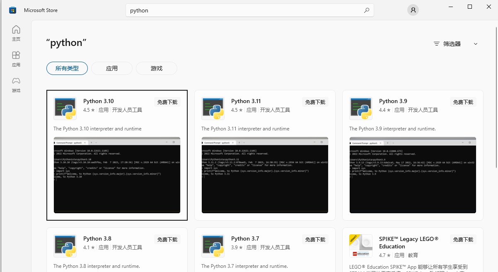

steps
工具
visual studio code
安装依赖
打开 VS code，在Extensions中分别搜索vim、MDPlant、Markdown PDF,进行安装

配置shell，选择powershell
安装python
window在开始搜索microsoft Store,打开microsoft store 搜索Python，点击获取会自动安装 
配置sphinx-build路径为环境变量
找到sphinx-build文件的路径，在环境变量中增加其路径
安装sphinx-rtd-theme
点击Terminal->new Terminal
pip3 install sphinx-rtd-theme==1.0.0
到这依赖已经完成，可以新建文档，然后在terminal窗口中输入指令
make html //将文档转为html,每次有更新都需要执行生成新的html
make server //执行后，可以反问http://127.0.0.1:8080/ 查看效果
make docs //